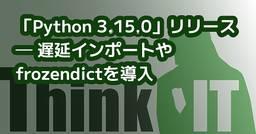
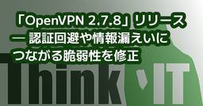
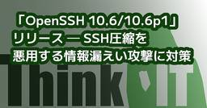
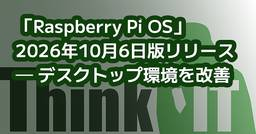
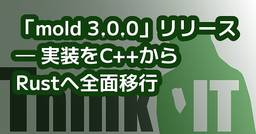
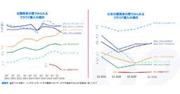
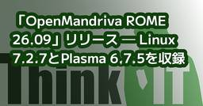
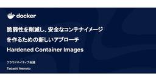
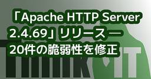

Think IT（シンクイット）
https://thinkit.co.jp/
【Think IT】“オープンソース技術の実践活用メディア” をスローガンに、インプレスグループが運営するエンジニアのための技術解説サイト。開発の現場で役立つノウハウ記事を毎日公開しています。
フィード

「Python 3.15.0」リリース ─ 遅延インポートやfrozendictを導入 1
1
Think IT（シンクイット）
「Python 3.15.0」リリース ─ 遅延インポートやfrozendictを導入 UTF-8を標準エンコーディング化、実験的JITとフリースレッド対応も強化kawahara2026年10月10日シェア ポスト はてブ 優先するニュース提供元に追加 Python Software Foundationは10月9日(現地時間)、プログラミング言語Pythonの最新版「Python 3.15.0」をリリースした。なお、10月1日にはPython 3.10.22、3.11.17、3.12.15、3.13.16、3.14.8もセキュリティ修正を含む更新版として公開されている。 「Python 3.15.0」はメジャーアップデートリリースに当たり、必要になるまでモジュールの読み込みを遅らせる遅延インポート、変更不能な辞書型「frozendict」、固有の番兵値を作成する「sentinel」などが導入された。また、標準エンコーディングがシステム環境にかかわらずUTF-8となった。 「Python 3.15.0」のハイライトは次の通り。 新しい「frozendict」は作成後に内容を変更できないマッピング型で、キーと値がハッシュ可能であれば「frozendict」自体もハッシュ可能となる。「sentinel」は、引数が省略されたことなどを表す固有の値を、簡潔かつ型付けしやすい形で作成するための組み込み型となる。 性能解析では、実行中のPythonプロセスへコードの変更や再起動を行わずに接続できる統計的サンプリングプロファイラー「Tachyon」が追加された。実験的JITコンパイラーも強化され、公式の測定では標準インタープリターと比較してx86-64 Linuxで平均7～8％の性能向上が報告されている。 「Python 3.15.0」は、Webサイトから入手できる。(川原 龍人/びぎねっと)[関連リンク]ReleaseWhat's new この記事をシェアしてください シェアする ポストする >ブクマする noteで書く 優先するニュース提供元にThink ITを追加 前の記事「NVIDIA 615.78.08」リリース ─ vkd3d-protonの遅延やカクつきを改善 関連記事この記事の筆者 kawahara kawaharaのプロフィールを見る 筆者の人気記事 「Pyth
1日前
「マイナス10個あげます」でアイテムが増えるゲーム ― 数値バリデーションの落とし穴2選
Think IT（シンクイット）
株式会社ステラセキュリティ代表の小竹(@tkmru)です。本記事は、先日公開した 「1日1回限定のガチャ」を20連できてしまう ― ゲームAPIで頻出するTOCTOU脆弱性と対策」に続く、ゲームAPIの脆弱性シリーズの第2弾です。元ネタは、2026年3月19日に開催された勉強会「TECH BATON in 東京 〜ゲームアンチチートに学ぶ セキュリティ設計と攻防の舞台裏〜」での登壇「10分で知る ゲームが『チートされる』仕組み 〜通信・API・メモリから見る攻撃と防御〜」です(スライドは Speaker Deck で公開しています)。前回は「同時並列リクエストで回数制限をすり抜ける」というレースコンディションの話でしたが、今回は入力値のバリデーションの話です。取り上げるのは次の2つです。マイナス値を受け付けてしまい、減らすはずのアイテムが増えてしまう巨大な値を受け付けてしまい、整数オーバーフローで所持数が壊れるいずれもゲーム固有の問題ではなく、決済・ポイント・在庫管理など数量を扱う Web アプリケーション全般で起こりうる典型的なバグです。「型は検証しているから大丈夫」「エスケープしているから大丈夫」と思っている箇所ほど穴になりがちなので、Webアプリ開発に携わる方にも参考にしていただければと思います。落とし穴1：マイナスの数量を送るとアイテムが増える想定シナリオ ― アイテム交換 API次のような仕様のAPIを例に考えます。エンドポイント: アイテムAをN個渡して、代わりにアイテムBを受け取る交換 APIサーバは「ユーザの所持数からN個引く」「アイテムBを1個付与する」という処理を行うRails のコントローラで書くと、次のような流れになります。# app/controllers/exchange_controller.rbdef create give_item_id = params[:give_item_id] give_count = params[:give_count] current_user.items[give_item_id] -= give_count # 渡す分を減らす current_user.items["item_b"] += 1 # 代わりのアイテムを付与 current_user.save!end一見、問題なさそうに見えます。しか
2日前
【OSS Summit North America 2026】Netflixのエンジニアが開発したコンテキストを圧縮するオープンソース、Headroomを紹介
Think IT（シンクイット）
2026年5月18日から20日の3日間、ミネソタのミネアポリスで開催されたOpen Source Summit North America 2026から、Netflixのエンジニアが解説するHeadroomというオープンソースソフトウェアを紹介する。セッションのタイトルは「Headroom: A Context Optimization Layer for LLM Applications」プレゼンテーションを行ったのはNetflixのTejas Chopra氏だ。動画は以下から視聴できる。●動画：Headroom: A Context Optimization Layer for LLM ApplicationsChopra氏のLinkedInによると2026年6月でNetflixを離れたことになっているが、このカンファレンスが行われた5月の段階ではNetflixの一員であったということだろう。所属はMachine Learning Platform Groupということから、Netflixにおける機械学習や大規模言語モデルの中核にいた人材であることがわかる。個人のデベロッパーとしてClaudeへの毎月の支払いが300ドル近くになった時にこの問題を何とかしないといけないと気付いたという。Headroomはコンテキストを圧縮するレイヤーとして、LLMにデータが送られる前にコンテキストを圧縮してコストを抑えるというライブラリーのようだ。 大規模言語モデルはコーディングからチャットによる議論まで多くのタスクをこなせるようになっており、Chopra氏もClaude CodeやCursorなどを日常で使っていると説明。しかしここで大きな問題があるとして挙げたのはそのコストだ。このスライドではToken Taxと表現されているが、使えば使うほどコストが発生するというのが大規模言語モデルの大きな障害になっているという。 大規模言語モデルはコーディングアシスタントであればAPI課金、チャットであればチャットの往復が重なるほどにそのチャットの内容が毎回送られることになる。大規模言語モデルがWeb検索などを行う際に内部で生成される検索ワードや異なるサイトへのアクセスなど、シンプルな質問をしたつもりでも大量のトークンが使用されることになる。またエラーログをコンテキストとして入力し、原因
2日前
「NVIDIA 615.78.08」リリース ─ vkd3d-protonの遅延やカクつきを改善
Think IT（シンクイット）
「NVIDIA 615.78.08」リリース ─ vkd3d-protonの遅延やカクつきを改善 systemdによるサスペンドやWaylandのカラーマネジメントに関する問題も修正kawahara2026年10月9日シェア ポスト はてブ 優先するニュース提供元に追加 NVIDIAは10月7日(現地時間)、Linux向けGPUドライバ「NVIDIA 615.78.08」をリリースした。 「NVIDIA Linux Display Driver」は、NVIDIA製GPUでOpenGL、Vulkan、CUDA、映像処理などのハードウェア機能を利用するためのドライバ。GeForce、NVIDIA RTX、データセンター向けGPUなどに対応する。 「NVIDIA 615.78.08」は、新しい機能やOS対応をProduction Branchに先行して提供するNew Feature Branch(NFB)の正式リリース。Vulkan拡張「VK_NV_low_latency2」のrevision 3に対応し、Direct3D 12をVulkanへ変換するvkd3d-protonで、特にフレーム生成を使用した際の遅延やカクつきを改善した。 「NVIDIA 615.78.08」のハイライトは次の通り。Webサイトから入手できる。(川原 龍人/びぎねっと)[関連リンク]NVIDIA Linux Display Driver 615.78.08README(NVIDIA 615.78.08) この記事をシェアしてください シェアする ポストする >ブクマする noteで書く 優先するニュース提供元にThink ITを追加 前の記事「OpenVPN 2.7.8」リリース ─ 認証回避や情報漏えいにつながる脆弱性を修正 次の記事「Python 3.15.0」リリース ─ 遅延インポートやfrozendictを導入 関連記事この記事の筆者 kawahara kawaharaのプロフィールを見る 筆者の人気記事 「Python 3.14.8」リリース ─ 緊急のアップデートリリース10月1日 23:32 「Apache HTTP Server 2.4.69」リリース ─ 20件の脆弱性を修正10月3日 23:23 「Raspberry Pi OS」2026年10月6日版リリース ─ デスク
3日前

「OpenVPN 2.7.8」リリース ─ 認証回避や情報漏えいにつながる脆弱性を修正
Think IT（シンクイット）
「OpenVPN 2.7.8」リリース ─ 認証回避や情報漏えいにつながる脆弱性を修正 Windows版ではDCOドライバーのローカルDoSにも対応kawahara2026年10月9日シェア ポスト はてブ 優先するニュース提供元に追加 OpenVPN Communityは10月7日(現地時間)、オープンソースのVPNソフトウェア「OpenVPN 2.7.8」をリリースした。 「OpenVPN」は、SSL/TLSを利用して安全な通信経路を構築するVPNソフトウェア。クライアント／サーバ型のVPNや拠点間接続などに利用でき、Windows、Linux、BSD、macOSなどのプラットフォームに対応する。 「OpenVPN 2.7.8」は、複数のセキュリティ問題を修正した正式リリース。細工した証明書による利用者のなりすましや、悪意のあるVPNサーバーから送信されたDNS検索ドメイン設定によるメモリー情報の漏えい、サービス拒否などの問題が修正されている。 「OpenVPN 2.7.8」のハイライトは次の通り。 「OpenVPN 2.7.8」のCommunity Editionは、Webサイトから入手できる。(川原 龍人/びぎねっと)[関連リンク]リリースノート この記事をシェアしてください シェアする ポストする >ブクマする noteで書く 優先するニュース提供元にThink ITを追加 前の記事「OpenSSH 10.6/10.6p1」リリース ─ SSH圧縮を悪用する情報漏えい攻撃に対策 次の記事「NVIDIA 615.78.08」リリース ─ vkd3d-protonの遅延やカクつきを改善 関連記事この記事の筆者 kawahara kawaharaのプロフィールを見る 筆者の人気記事 「Python 3.14.8」リリース ─ 緊急のアップデートリリース10月1日 23:32 「Apache HTTP Server 2.4.69」リリース ─ 20件の脆弱性を修正10月3日 23:23 「Raspberry Pi OS」2026年10月6日版リリース ─ デスクトップ環境を改善10月8日 1:51 「Courier 2.0.8」リリース ─ ESMTP処理のクラッシュを修正10月2日 1:34 「mold 3.0.0」リリース ─ 実装をC++からRustへ全面移
3日前
「Linuxネットワーク標準教科書」について
Think IT（シンクイット）
はじめに「Linuxネットワーク標準教科書」は、特定非営利活動法人エルピーアイジャパンが提供している「標準教科書シリーズ」のうち、ネットワークの学習に利用していただくことを目的として開発、公開している教科書です。「Linux標準教科書シリーズ」は、様々な種類の教科書を提供していますが、特にLinuxの基礎を学習するために以下の3冊が提供されています。・「Linux標準教科書」主にLinuxのコマンド操作を学習するための教科書です。・「Linuxサーバー構築標準教科書」主にLinuxを使ってWebサーバー、DNSサーバー、メールサーバーの構築を学習するための教科書です。・「Linuxシステム管理標準教科書」主にLinuxのシステム管理を学習するための教科書です。そして4冊目となる「Linuxネットワーク標準教科書」は、上記3冊で詳細に解説できなかったLinuxネットワークについて補完するために企画、執筆されました。また、従来はPDF版やEPUB版、Kindle版で提供されていましたが、Think ITで連載形式で読むことができるようになりました。もちろん、1冊にまとめられた電子版も入手できますので、「早く読みたい！」という方はダウンロードしてみてください。「Linuxネットワーク標準教科書」ダウンロードページhttps://linuc.org/textbooks/network/全体の流れ本教科書では、以下の通りに実習を進めます。1章 ネットワーク学習環境の構築実習環境の構築と、VirtualBoxのネットワークについて解説します。また、パケットキャプチャを行うためにWiresharkをインストールします。2章 IPアドレスインターネットの通信の基盤であるIPの仕組みと、IPアドレスについて解説します。3章 TCP/UDP/ICMPIP通信の上で使用される、TCPやUDP、ICMPについて解説します。4章 パケットフィルタリングIPアドレスやポート番号などを元にパケット通信の許可や拒否を行うパケットフィルタリングについて解説します。5章 ルーティング/IPマスカレード/プロキシインターネットの基本的な通信の仕組みであるネットワーク間を接続する仕組みであるルーティングについて解説します。また、Linuxカーネルのアドレス変換の仕組みであるIPマスカレードや特定のプロトコ
3日前

1日3.6億件の計算を、空冷のまま回せるか――みずほ証券がHPE Cray XD2000で液冷データセンターを新設
Think IT（シンクイット）
📌 このニュース、3行で押さえるなら 📌みずほ証券と日本ヒューレット・パッカードが、液冷データセンターを新たに構築し、国内の金融業界で初となる直接液冷(DLC)方式を採用した「HPE Cray XD2000」を導入すると発表。今秋から液冷設備やシステム構築、稼働評価等を実施し、2027年4月以降に本番稼働する予定背景にあるのはグローバルマーケッツ部門の計算需要で、デリバティブ評価や市場リスク・信用リスクの計量に向けたシミュレーションは1日あたりの計算件数が3.6億件超と年々増加しているDLC方式は空冷方式と比較してキロワットあたり最大20%の性能向上と15%の消費電力削減を実現する。新システムではサーバーノードあたり現行の1.6倍の性能を見込む。第1期として8サーバーノードを導入し、将来のプライベートAI基盤向けGPUサーバーへの展開も検討する📝 Think IT編集部の見解 📝液冷の採用判断は、これまで研究機関やHPC領域の話として語られることが多かった。それが金融機関の業務システムで、しかもデータセンターごと新設する形で出てきたことに、この発表の意味がある。きっかけは明快だ。1日3.6億件超という計算件数が年々増加している。デリバティブ評価、市場リスク、信用リスクの計量はいずれも計算を積み上げる処理で、取扱商品が増えれば負荷も比例して増す。リリースが「システムリソースの拡張と、計算性能を安定的に引き出すための基盤強化が必須」と書くのは、ラックに詰め込める演算能力が空冷では頭打ちになる段階に来たということだろう。技術的に押さえておきたいのは、提示されている数値がいずれもHPEの内部性能テストに基づく推定値である点だ。キロワットあたり20.7%の性能差、シャーシ電力14.9%の差は、SPEChpc 2021ベンチマークによる2023年4月時点の比較として脚注に明記されている。実ワークロードでの結果ではない。1.6倍という性能向上も、現行のHPE Apollo2000とHPE ProLiantを組み合わせたシステムとの独自比較であり、他社構成からの移行で同じ数字が出るとは限らない。運用面で興味深いのは、冷却液の漏れを検知した際に自動通報する監視機能に言及している点だ。液冷は配管とクーラントという、従来のサーバー運用にはなかった管理対象を持ち込む。DLCシステム...
3日前

「OpenSSH 10.6/10.6p1」リリース ─ SSH圧縮を悪用する情報漏えい攻撃に対策
Think IT（シンクイット）
「OpenSSH 10.6/10.6p1」リリース ─ SSH圧縮を悪用する情報漏えい攻撃に対策 SFTPやGSSAPI認証を強化、ハイブリッド耐量子署名にも対応kawahara2026年10月8日シェア ポスト はてブ 優先するニュース提供元に追加 OpenBSD Projectは10月6日(現地時間)、SSHソフトウェアの最新版「OpenSSH 10.6/10.6p1」をリリースした。 「OpenSSH」は、遠隔システムへのログインやコマンド実行、ファイル転送、ポート転送などを暗号化するSSHプロトコルのオープンソース実装。SSHクライアントとサーバーに加え、scpやsftp、ssh-agentなどの関連ツールを提供する。 「OpenSSH 10.6」は、複数のセキュリティ問題を修正したリリース。SSH接続内の複数チャネルで圧縮辞書を共有することによって暗号文の長さから秘密情報を推測できるサイドチャネル攻撃への対策として、LZ77辞書圧縮が無効化された。また、SFTPの再帰コピーやGSSAPI認証、トンネル転送などの処理も強化されている。 ハイライトは次の通り。 なお、scpの「-R」オプションは廃止予定となり、OpenSSH 10.6では使用時に警告が表示される。将来のリリースでは無視されるようになり、リモート間のコピーはscpを実行したホストを経由する標準の動作へ移行する予定。 OpenSSH 10.6およびPortable版のOpenSSH 10.6p1は、Webサイトから入手できる。(川原 龍人/びぎねっと)[関連リンク]リリースノート この記事をシェアしてください シェアする ポストする >ブクマする noteで書く 優先するニュース提供元にThink ITを追加 前の記事「Raspberry Pi OS」2026年10月6日版リリース ─ デスクトップ環境を改善 次の記事「OpenVPN 2.7.8」リリース ─ 認証回避や情報漏えいにつながる脆弱性を修正 関連記事この記事の筆者 kawahara kawaharaのプロフィールを見る 筆者の人気記事 「Python 3.14.8」リリース ─ 緊急のアップデートリリース10月1日 23:32 「Apache HTTP Server 2.4.69」リリース ─ 20件の脆弱性を修正10月3日 23:2
3日前

「Raspberry Pi OS」2026年10月6日版リリース ─ デスクトップ環境を改善 1
Think IT（シンクイット）
「Raspberry Pi OS」2026年10月6日版リリース ─ デスクトップ環境を改善 PC／Mac向け「Raspberry Pi Desktop」もDebian 13ベースの64bit版として公開kawahara2026年10月8日シェア ポスト はてブ Raspberry Piは10月6日(現地時間)、公式OS「Raspberry Pi OS」の最新インストールイメージを公開した。 「Raspberry Pi OS」は、DebianをベースにRaspberry Piシリーズ向けのデスクトップ環境や設定ツール、ハードウェア対応機能などを組み込んだLinuxディストリビューション。デスクトップ版、推奨アプリケーションを追加したFull版、デスクトップ環境を含まないLite版が用意されている。 「Raspberry Pi OS」の2026年10月6日版は、Debian 13「Trixie」をベースとし、64bit版および32bit版にLinux 6.18.50と最新のRaspberry Piファームウェアを収録したもの。ハイライトは次の通り。 同時に、一般的なPCとMac向けの「Raspberry Pi Desktop」もアップデートされた。従来のDebian 11ベースの32bit版から、Debian 13を基盤とするamd64版へ移行し、新しいドックやControl Centreに加えてRaspberry Pi Connectクライアントを収録した。Intel／AMD搭載PCとIntel搭載Macを対象としており、Apple Silicon搭載Macには対応していない。 Raspberry Pi DesktopはLive ISOとして提供され、Webサイトからダウンロードできる。Raspberry Pi Desktopは、USBメモリから永続化モードで起動できるほか、Calamaresを使って内蔵ストレージへインストールできる。なお、Debian 13ベースのRaspberry Pi OSを利用している場合、aptコマンドによるアップデートの適用によって同等の更新を導入できる。(川原 龍人/びぎねっと)[関連リンク]リリースノートアナウンス この記事をシェアしてください シェアする ポストする >ブクマする 前の記事「mold 3.0.0」リリース ─ 実装
4日前

「mold 3.0.0」リリース ─ 実装をC++からRustへ全面移行
Think IT（シンクイット）
「mold 3.0.0」リリース ─ 実装をC++からRustへ全面移行 前バージョンmold 2.42.1との互換性を維持kawahara2026年10月8日シェア ポスト はてブ mold teamは10月5日(現地時間)、高速リンカー「mold 3.0.0」をリリースした。 「mold」は、コンパイラが生成したオブジェクトファイルを実行ファイルや共有ライブラリへリンクするオープンソースのリンカー。並列処理と効率的なデータ構造による高速なリンク処理を特徴とし、GNU ldやLLVM lldなどの代替として利用できる。 「mold 3.0.0」は、実装をC++からRustへ全面的に書き直した初の正式版。従来のC++版は2.42.1が最終版となり、今後の3.x系列ではGNU ldとの互換性、特にリンカースクリプトへの対応を強化し、Linuxディストリビューションの既定リンカーとして採用可能な水準を目指す。 「mold 3.0.0」のハイライトは次の通り。 Rustへの移行後も、リンク性能はmold 2.42.1と同等とされている。開発チームはすべての対応アーキテクチャーでテストを実行したとしている。セキュリティ面では、破損した入力ファイルを処理する際の範囲外メモリ読み取りがRustの境界検査によって検出されるようになった。通常の利用では2.42.1からのドロップイン置換を想定しており、コマンドラインやビルドプロジェクト側の設定を変更せずに更新できるとしている。ただし、mold自体をソースからビルドする場合は注意が必要。 対応する対象アーキテクチャーはx86-64、i386、ARM 32/64bitなど。「mold 3.0.0」は、Webサイトから入手できる。(川原 龍人/びぎねっと)[関連リンク]リリースノート この記事をシェアしてください シェアする ポストする >ブクマする 前の記事「OpenMandriva ROME 26.09」リリース ─ Linux 7.2.7とPlasma 6.7.5を収録 次の記事「Raspberry Pi OS」2026年10月6日版リリース ─ デスクトップ環境を改善 関連記事この記事の筆者 kawahara kawaharaのプロフィールを見る 筆者の人気記事 「Python 3.14.8」リリース ─ 緊急のアップデートリリー
4日前
「C#」の「WinUI」でデスクトップゲーム「Color」を開発してみよう
Think IT（シンクイット）
はじめにこの連載では、さまざまなプログラミング言語やライブラリで同じゲームを開発することで、容易にそのプログラミング言語に入門します。第12回の今回はプログラミング言語「C#」を使って、次のURLのようなColorゲームを作ります。こちらからアセットをダウンロードしておいてください。ColorゲームについてColorゲームの内容は第1回でも解説した通り、ゲームを開始したら、赤緑青の色ブロックをクリックします。すると背景色にその色が混ぜられるので、どんどんクリックして真っ白な背景にしていこうというゲームです。プログラミング言語についてC#はMicrosoftが開発した言語で、デスクトップアプリ(Windows)、Webアプリ(ASP.NET)、ゲーム開発(特にUnity)などに使われています。一度「中間言語(IL)」にコンパイルし、実行時にJITコンパイルするハイブリッド型のコンパイラ言語で、オブジェクト指向でデータ型が厳密に管理されるためバグが起きにくく、「.NET」という仕組みで多くのライブラリの機能がすぐに使えます。WinUIについて「WinUI」は「Windows UI Library」の略で、Microsoftが提供するWindowsアプリ向けのUIフレームワークです。2026年現在は主に「WinUI 3」を指すことが多く、Windows App SDKの一部として使われます。C# / .NETでWindowsデスクトップアプリを作ることができ、UIはXAMLで記述します。Windows 11に合ったモダンなUIを作りやすく、Button、TextBox、ListViewなどのUI部品も用意されています。UWPの後継的な位置づけのフレームワークです。開発のために必要となる環境の準備今回必要となる、無料版の「Visual Studio 2026」(以下、VS2026)を準備します。次のURLからVisual StudioインストーラーをダウンロードしてVS2026のC#をインストールしてください。プロジェクトを作成しようVS2026を起動したら「Create a new project」をクリックし、コンボボックスで「C#」と「Windows」を選び「WinUI Blank App(Packaged)をダブルクリックします。「Project name」を「co
4日前

【KubeCon Japan】CNCFのリサーチ「クラウドネイティブ開発の現状」から見える日本のITが抱える問題点を考察する
Think IT（シンクイット）
Cloud Native Computing Foundation（CNCF）がKubeCon＋CloudNativeCon Japan 2026に合わせて公開した、日本におけるクラウドネイティブなシステム開発および運用に関する調査を紹介し、同時に日本が抱える問題点に関する考察をお届けする。リサーチはCNCFとSlashDataの共同で行われ、リサーチの部分は主にSlashDataが担当、2025年12月から2026年1月にかけて世界規模で実施され、95ヶ国から12500人が参加した。アジアからの回答者は全体の9％に相当するという。リサーチの要約については以下のページから参照可能だ。●リサーチのページ：日本におけるクラウドネイティブ開発の現状 2026このレポートのタイトルは「日本におけるクラウドネイティブ開発の現状2026」、クラウドネイティブなシステムの開発と運用の現状を世界のデータと比較して考察するという内容だ。このレポートの冒頭で日本のクラウドネイティブな開発者の数が95万人になったことを紹介。しかしながら2025年のQ3の数からは減少している。この95万人はThe Linux Foundationのプレスリリースでは「クラウドネイティブな開発者が100万人」になったと高く評価していた内容だが、より詳細に読み込むと減少しているが、調査の誤差かもしれないというのがこのレポートの最初のポイントになる。LFのプレスリリースは以下を参照して欲しい。●参考：CNCFとSlashDataの調査レポート：日本のクラウドネイティブコミュニティの開発者数が約100万人に到達 また次のポイントとして、日本が世界と比べてパブリッククラウドを使う割合が低く、オンプレミスサーバーの利用が高いことを紹介している。パブリッククラウドの利用が29％、プライベートクラウドも同じく29％、それに対してオンプレミスサーバーの利用は47％となっている。この数値は1年前、つまり2025年のQ1からさらに拡大している。これに対して世界の数値はオンプレミスが38％、パブリッククラウドが33％、そしてプライベートクラウドが38％であるという。日本でオンプレミスサーバーの利用が大きいことについて、その背景を探るのであれば、コストについて質問するべきだろう。パブリッククラウドが即座に使えるプラットフォームとし
4日前

AIを使いたいのに、コードを外に出せない――AIコーディング支援「IBM Bob」がオンプレミスとソブリンクラウドに対応
Think IT（シンクイット）
📌 このニュース、3行で押さえるなら 📌IBMが、AIエージェント駆動の開発支援ツール「IBM Bob」のセルフホステッド型を発表。オンプレミス、プライベートクラウド、ソブリンクラウド、エアギャップなど自社で管理できる環境でAIを活用したソフトウェア開発を行えるようになる多くのAIコーディングツールがデータを外部サービスへ移す必要があるのに対し、セルフホステッド型では顧客のコード、アプリケーションコンテキスト、データが既に存在している環境内で、AI活用の開発およびモダナイゼーション機能をデプロイできるライセンス契約済みの対応モデルをオンプレミス環境で利用しインターネットから隔離されたエアギャップ環境で動かせるほか、ハイブリッド構成により対応する外部モデルサービスと連携させることも可能📝 Think IT編集部の見解 📝この発表が応えているのは、AIコーディング支援をめぐって多くの現場で起きている膠着状態だ。生産性向上の効果は認識されている。しかしソースコードは知的財産であり、扱うデータには規制がかかる。外部サービスへコードを送信する構成が社内規定で通らず、検討段階で止まっているケースは珍しくない。リリースが「パブリッククラウド上のAIプラットフォームの利用が制限される場合があります」と書くのは、この状況を指している。興味深いのは、IBMがこれを一時的な制約ではなく構造的な傾向として捉えている点だ。リリースはFuturum Researchの予測を引き、ハイブリッドおよびエッジ環境へのデプロイメントが2030年までにAIインフラ市場の44%を占め、パブリッククラウドのシェアは同期間に46%まで低下するとしている。AI活用が進むほどクラウドへ集約されるのではなく、むしろ分散していくという見立てだ。もう1点、エンタープライズのモダナイゼーションという文脈も見逃せない。リリースは「多くのAI開発ツールは主としてクラウドネイティブ環境向けに設計されています。しかし、企業のモダナイゼーションでは、アプリケーションやデータが、オンプレミス、プライベートクラウドなどの管理された環境にまたがって分散していることが一般的です」と指摘する。モダナイゼーションの対象となるレガシー資産ほど、クラウドに出せない場所にある。そこへAIを届けられなければ、最も支援が必要な領域が手つかずで残...
5日前
LF Energyがミートアップを実施。ヨーロッパとの違いが際立ったプレゼンテーションを紹介
Think IT（シンクイット）
The Linux Foundation（LF）配下のLF Energyがミートアップを都内で開催した。ミートアップではLF EnergyのエグゼクティブディレクターのAlex Thornton氏が来日し、プレゼンテーションを行った。LF Energyは2018年に設立されたLFの下部組織で、主にヨーロッパの電力、エネルギー業界のベンダーが参加するコミュニティであり、日本からは日立製作所がメンバーとして加入している。2026年7月21日に都内で開催されたミートアップであったが、参加者は約10名、時間も15時から17時の2時間と短く、エグゼクティブディレクターのプレゼンテーションと日立の研究所所属のエンジニアがLF Energyのプロジェクトをデモを通して簡単に紹介するという内容となった。この稿ではAlex Thornton氏のプレゼンテーションを紹介する。 プレゼンテーションのタイトルは「Intro LF Energy: Past, Present and Future」というもので、LF Energyを知らない人向けの内容となっている。しかしながら数少ない参加者はすでにLF Energyを知っているからこそ7月の平日の午後に日立が設営したおしゃれなワーキングスペースに来たわけで、その状況から見れば最新情報のアップデートに重きをおいたほうが良かったかもしれない。 エネルギーについての現状というスライドでは日本の液化天然ガスの価格が暴騰していることを紹介。 ここではアメリカがイランに対して戦争を始めたことについても触れ、アメリカ人として遺憾に思うとコメントし、エネルギーが地政学的リスクの上に成り立つ脆弱な資源であることを説明した。 「LF Energyとは何か？」というスライドでは「LF配下で安価、安全、信頼、クリーンなエネルギーのためのデジタル基盤を提供する中立的な存在」であると説明。ここではオープンソースであるかどうかが明記されていないところに注目したい。この部分については後半のスライドで説明されることになる。 ここではRTEというフランスの送電会社とオランダのAllianderという配電会社が同じ問題を持っていたことから始まったと説明。このスライドではこの2社がこれまでの発電方式ではなく再生可能なエネルギーが利用できるようになったことから、そのエネルギーを従来の
5日前

「OpenMandriva ROME 26.09」リリース ─ Linux 7.2.7とPlasma 6.7.5を収録
Think IT（シンクイット）
「OpenMandriva ROME 26.09」リリース ─ Linux 7.2.7とPlasma 6.7.5を収録 LLVM/Clang 23とRPM 6.1.0へ更新、AI／GPU環境やSnap対応も強化kawahara2026年10月5日シェア ポスト はてブ 優先するニュース提供元に追加 OpenMandriva Projectは10月1日(現地時間)、Linuxディストリビューション「OpenMandriva ROME 26.09」をリリースした。 「OpenMandriva」は、RPMパッケージを採用する独立系のLinuxディストリビューション。ROMEは継続的に新しいソフトウェアを提供するローリングリリース版で、今回の26.09は既存利用者へ先行して提供されていた更新を反映した新しいインストールイメージとなっている。 「OpenMandriva ROME 26.09」ではカーネルとしてLinux 7.2.7が採用され、既定のコンパイラがLLVM/Clang 23に更新された。RPM 6.1.0やGCC 16.2.0、glibc 2.44など開発・実行基盤も更新され、デスクトップ環境にはKDE Plasma 6.7.5などが採用されている。 「OpenMandriva ROME 26.09」のハイライトは次の通り。 Webサイトからダウンロードできる。(川原 龍人/びぎねっと)[関連リンク]リリースアナウンス この記事をシェアしてください シェアする ポストする >ブクマする noteで書く 優先するニュース提供元にThink ITを追加 前の記事「Parrot OS 7.4」リリース ─ AnonSurf 6.0を刷新、最適化ISOを正式提供 次の記事「mold 3.0.0」リリース ─ 実装をC++からRustへ全面移行 関連記事この記事の筆者 kawahara kawaharaのプロフィールを見る 筆者の人気記事 「Python 3.14.8」リリース ─ 緊急のアップデートリリース10月1日 23:32 「Apache HTTP Server 2.4.69」リリース ─ 20件の脆弱性を修正10月3日 23:23 「Raspberry Pi OS」2026年10月6日版リリース ─ デスクトップ環境を改善10月8日 1:51 「Courier
6日前
「Parrot OS 7.4」リリース ─ AnonSurf 6.0を刷新、最適化ISOを正式提供
Think IT（シンクイット）
「Parrot OS 7.4」リリース ─ AnonSurf 6.0を刷新、最適化ISOを正式提供 Linux 7.1.13を収録、Rocket 2.0やARMイメージ、初期設定ツールも強化kawahara2026年10月5日シェア ポスト はてブ 優先するニュース提供元に追加 Parrot Securityは10月3日(現地時間)、セキュリティを重視したLinuxディストリビューション「Parrot OS 7.4」をリリースした。 「Parrot OS」はDebian 13をベースとし、ペネトレーションテスト、デジタルフォレンジック、リバースエンジニアリング、プライバシー保護などの用途を想定したLinuxディストリビューション。多数のセキュリティツールを収録するSecurity Editionのほか、日常利用や開発向けのHome Editionなどを提供している。 「Parrot OS 7.4」では、通信をTor経由に切り替える「AnonSurf」が全面的に書き直された。初期設定ツール「Discovery」やコンテナ化されたセキュリティツールを管理する「Rocket」も強化され、対応CPU向けに最適化したISOイメージが正式に提供される。 「Parrot OS 7.4」のハイライトは次の通り。 対応環境は、MD64およびARM64、VirtualBox、VMware、QEMU／KVM、Apple Silicon、Raspberry Pi、WSL、Dockerなど。「Parrot OS」は、Webサイトからダウンロードできる。「Parrot OS」はローリング更新に対応しており、既存のParrot 7環境はparrot-upgradeコマンドでアップデートを適用できる。(川原 龍人/びぎねっと)[関連リンク]リリースノート この記事をシェアしてください シェアする ポストする >ブクマする noteで書く 優先するニュース提供元にThink ITを追加 前の記事「Samba 4.23.13」リリース ─ KDC暗号化設定の解析に対応 次の記事「OpenMandriva ROME 26.09」リリース ─ Linux 7.2.7とPlasma 6.7.5を収録 関連記事この記事の筆者 kawahara kawaharaのプロフィールを見る 筆者の人気記事 「Pytho
6日前

【クラウドネイティブ会議】コンテナイメージの脆弱性をどう減らすか ―― 依存関係を最小化する新たな安全設計
Think IT（シンクイット）
クラウドネイティブ会議のセッション「脆弱性を削減し、安全なコンテナイメージを作るための新しいアプローチ：Hardened Container」では、Docker, Inc.のStrategic Solutions Engineerである根本征氏が、コンテナイメージに潜む依存関係と脆弱性の問題を解説した。OSや言語ランタイム、各種ライブラリなど多数のOSSを含むコンテナイメージは、ソフトウェアサプライチェーン攻撃の標的になりやすい。本セッションでは、安全なイメージを選ぶ基準に加え、依存関係や攻撃対象領域を最小化する「Hardened Container Images」を紹介。Docker Hardened Imagesへの移行デモを交えながら、脆弱性を後から追いかけるのではなく、初めから安全性を高めるアプローチを示した。多数の依存関係が広げるコンテナの攻撃対象領域コンテナイメージは、開発者が作成したアプリケーションコードだけで構成されているわけではない。ベースイメージに含まれるOSや言語ランタイム、OSパッケージ、npmやpipなどで導入するアプリケーションの依存パッケージを含め、多数のOSSで構成される。Docker, Inc.のStrategic Solutions Engineerである根本征氏は、Node.jsアプリケーションのDockerfileを例に、その構造を説明した。ここではベースイメージとして「node:20-alpine」を指定し、curlなどのOSパッケージを追加し、npmを通じて依存パッケージをインストールする。開発者が直接選んだものだけでなく、その内部の依存関係まで含めて一つのコンテナイメージが作られるのである。「コンテナイメージは、自分が作ったアプリケーションコードだけではなく、多数のオープンソースのコンポーネントを含めてパッケージしていきます」と根本氏は説明した。こうした依存関係の中に改ざんされたコンポーネントや脆弱性が含まれていれば、自社のアプリケーションも影響を受ける。攻撃者から見れば、一つの広く利用されているパッケージを改ざんするだけで、多数のアプリケーションへ影響を及ぼせる。これがソフトウェアサプライチェーン攻撃の怖さである。セッションでは、近年CVEの報告数が急増し、サプライチェーン攻撃も深刻化していることが示された。一方で、修
6日前
Meta、新型VRデバイスや新型AIグラスを多数発表 ほか
Think IT（シンクイット）
今週も、バーチャル領域の最新動向をお届けします。Metaからは、重さ約100グラムの新型メガネ型VRデバイス「Meta VR Glasses」向けの開発環境であるv207 SDKの公開や、AIグラス向け開発環境の拡充、さらに文章入力で2D・3Dゲームを制作できる「Horizon Create」と「Horizon Studio」の発表など、開発支援に関する注目のアップデートが相次いで発表されました。また国内の社会実装事例として、株式会社G1 companyがのぞくだけで360度映像を楽しめる「VR双眼鏡」の法人・自治体向け販売およびレンタルを開始したニュースをお伝えします。Meta、新型デバイス「Meta VR Glasses」の開発環境を公開Metaは2027年春に発売を予定している、重さ約100グラムのメガネ型VRデバイス「Meta VR Glasses」に向け、アプリ開発ツール群「v207 SDK」を公開しました。本機はOSやストアがMeta Questと共通で、操作は視線と手が中心となります。視野角は約70×66度と狭いものの、高解像度で文字を読みやすく、重要なUI要素を中央に配置することが推奨されています。開発手段はUnity・Unreal、Android、そしてWebの3系統が用意され、シミュレーターを活用することで実機がなくても検証が可能です。さらにAIエージェント向けのデバッグ・ビルドツール「Meta VR CLI」なども提供され、開発効率の向上とストアでの発見性改善が図られています。本ニュースの詳細はこちら：Meta、新型デバイス「Meta VR Glasses」の開発環境を公開https://www.moguravr.com/meta-vr-glasses-v207-sdk/Meta、AIグラス向け開発環境を拡充 3つの開発手段を導入可能にMetaはAIグラス向け開発環境のアップデートを発表し、主に3つの開発手段と配信の場を導入します。1つ目はモバイルアプリを対応させる「Wearables Device Access Toolkit 1.0」で、音声操作や頭部モーションストリーミングに対応します。2つ目はHTMLやCSSで制作できるMeta Ray-Ban Display向けWebアプリで、ブラウザシミュレーターや専用UI Toolkitも提供され
6日前
「Samba 4.23.13」リリース ─ KDC暗号化設定の解析に対応
Think IT（シンクイット）
「Samba 4.23.13」リリース ─ KDC暗号化設定の解析に対応 SMB3署名やCTDBなど7件の不具合を修正、winbindのクラッシュやPOSIX ACLなどkawahara2026年10月4日シェア ポスト はてブ 優先するニュース提供元に追加 Samba Teamは10月1日(現地時間)、オープンソースのファイル／プリンター共有ソフトウェア「Samba 4.23.13」をリリースした。 「Samba」は、Windowsで利用されるSMBプロトコルをオープンソースで実装したソフトウェア。LinuxやBSDなどのUnix系OSとWindowsとのファイル／プリンター共有に利用できるほか、Active Directory互換のドメインコントローラとしても動作する。 「Samba 4.23.13」は、Samba 4.23系列の最新安定版となるアップデートリリース。KDC暗号化設定の解析対応や、SMB3のセッション確立時における署名処理、クラスター構成で利用されるCTDB、winbind、POSIX ACLなどに関する7件の不具合が修正された。 「Samba 4.23.13」のハイライトは次の通り。 「Samba 4.23.13」は、Webサイトから入手できる。(川原 龍人/びぎねっと)[関連リンク]リリースノート この記事をシェアしてください シェアする ポストする >ブクマする noteで書く 優先するニュース提供元にThink ITを追加 前の記事「Apache HTTP Server 2.4.69」リリース ─ 20件の脆弱性を修正 次の記事「Parrot OS 7.4」リリース ─ AnonSurf 6.0を刷新、最適化ISOを正式提供 関連記事この記事の筆者 kawahara kawaharaのプロフィールを見る 筆者の人気記事 「Python 3.14.8」リリース ─ 緊急のアップデートリリース10月1日 23:32 「Apache HTTP Server 2.4.69」リリース ─ 20件の脆弱性を修正10月3日 23:23 「Raspberry Pi OS」2026年10月6日版リリース ─ デスクトップ環境を改善10月8日 1:51 「Courier 2.0.8」リリース ─ ESMTP処理のクラッシュを修正10月2日 1:34 「mol
7日前

「Apache HTTP Server 2.4.69」リリース ─ 20件の脆弱性を修正
Think IT（シンクイット）
「Apache HTTP Server 2.4.69」リリース ─ 20件の脆弱性を修正 mod_vhost_aliasのバッファーオーバーフローやmod_http2のuse-after-freeなどに対応kawahara2026年10月3日シェア ポスト はてブ 優先するニュース提供元に追加 Apache Software Foundationは10月1日(現地時間)、オープンソースのWebサーバー「Apache HTTP Server 2.4.69」をリリースした。 「Apache HTTP Server 2.4.69」は、2.4系列の最新GA版となるアップデートリリース。20件の脆弱性が修正されており、Apacheの深刻度評価では5件が「moderate」、15件が「low」となっている。Apache HTTP Server Projectは、従来のすべてのバージョンからのアップデート適用を推奨している。 「Apache HTTP Server 2.4.69」のハイライトは次の通り。 修正された脆弱性の重大性は、5件が「moderate」、15件が「low」となっているものの、バッファーオーバーフローやuse-after-free、限定的なコード実行につながる問題も含まれており、ユーザはアップデートを施すことが推奨される。 「Apache 2.4.69」は、Webサイトからダウンロードできる。(川原 龍人/びぎねっと)[関連リンク]リリースアナウンスChangeLog この記事をシェアしてください シェアする ポストする >ブクマする noteで書く 優先するニュース提供元にThink ITを追加 前の記事「Courier 2.0.8」リリース ─ ESMTP処理のクラッシュを修正 次の記事「Samba 4.23.13」リリース ─ KDC暗号化設定の解析に対応 関連記事この記事の筆者 kawahara kawaharaのプロフィールを見る 筆者の人気記事 「Python 3.14.8」リリース ─ 緊急のアップデートリリース10月1日 23:32 「Apache HTTP Server 2.4.69」リリース ─ 20件の脆弱性を修正10月3日 23:23 「Raspberry Pi OS」2026年10月6日版リリース ─ デスクトップ環境を改善10月8日
8日前

MySQLの「ST_Touches()」や「ST_Crosses()」などの8つの関数でジオメトリの位置関係を見比べてみよう
Think IT（シンクイット）
はじめに第25回ではST_Within()とST_Contains()で「含まれる」関係を、第26回ではST_Intersects()で「交わる」関係を判定する方法を紹介しました。実はMySQLには、この手の「2つのジオメトリがどういう位置関係にあるか」を判定する関数がたくさん用意されています。今回と次回の2回にわけて、まだ紹介していない関数も含めて全部で8つの判定関数を、一気に見比べてみます。個々の関数を見ているだけでは気づきにくい特徴などを浮き上がらせることができればと思います。今回は、ポリゴンと線との関係に焦点を当てて見ていきます。舞台は日本へそ公園サンプルデータは、みんな大好き「北緯35度、東経135度付近」の数値を使うことにしました。第5回で紹介した兵庫県西脇市の「日本のへそ」がある場所です。この場所には測地系の違いにより「大正のへそ」と「平成のへそ」の2つの35-135ポイントがありますが、今回はSRID 6668(JGD2011 現JGD2024)を使いますので、POINT(35 135) は平成のへそのほうを指していることになります。今回の比較の基準とするポリゴンさて、この点を左下の角として、北と東方向それぞれに0.01度ずつ広げた長方形を「基準ポリゴン」とします。北緯35度付近では緯度0.01度が約1.1km、経度0.01度が約0.9kmになります。今回のテーマである様々な関数の動作を試す、というだけの話ではここまで意識する必要はありませんが、このように日頃から「地図感覚」を高めておくと、きっと何かの時に役に立ちます。mysql> SELECT ST_Length(ST_GeomFromText('LINESTRING(35 135, 35.01 135)',6668)) lat001;+--------------------+| lat001 |+--------------------+| 1109.4148613032885 |+--------------------+1 row in set (0.000 sec)mysql> SELECT ST_Length(ST_GeomFromText('LINESTRING(35 135, 35 135.01)',6668)) lon001;+-------------------+| lon0
9日前
マニュライフ生命のAIの責任者にインタビュー。全社員がAIを使いこなすAI for Allとは？
Think IT（シンクイット）
世界有数の金融サービスを展開するManulife Financial Corporationの日本でのグループ会社、マニュライフ生命保険株式会社で、現場におけるAI実装をリードするジャンセン・トマ氏（Head of AI, Thomas Janssens）にインタビューを実施。生命保険会社としてAIをすべての業務に活かすことを目指すという。その実践についてインタビューを行った。 マニュライフはAIを使って保険業務を行っているということですが、どのくらい前からそれが始まったんですか？Janssens：マニュライフとしてはもう10年ほど前からAIに取り組んでいます。その当時は機械学習という名前でしたが、ずっと継続して機械学習そして現在は生成AIの利用に取り組んでいるということになります。すでに2024年11月には営業プロセスの中に生成AIを使うということを発表しているので、業界の中でも取り組みは早い方だったんじゃないかと思います。環境的にはどんなプラットフォームを使っているんですか？Janssens：弊社はMicrosoft Azureを使っていますが、保険業務という仕事柄、セキュアな環境が必要になるので、専用のクラウドを使うという感じですね。その中で生成AIについてはOpenAIのモデルを使っています。会社の中からはセキュアな環境ということで使うPCのUSBは使えないようになっています。実際、USBメモリを挿してもデータをコピーすることもできません。また社内から外部のクラウドサービスを使うことも禁止されています。外部から送られるメールのアタッチメントもチェックされるということですね。Janssens：そうなりますね。もちろん社員が個人で自宅から例えばClaude Codeを使うことは可能ですが、それはあくまでも個人の利用ということになります。AIについては具体的にどのような領域で使われているんですか？Janssens：一番わかりやすいのは保険の営業におけるQ＆Aにおいて、担当者からの質問に答えるというアプリケーションですね。保険の契約にはお客様のさまざまな情報を聞き取った上で最適な契約になるように担当者がルールや規則を参照しながら決定を行いますが、その際に発生する質問にAIが答えるというものです。生成AIは確率論的な回答を生成しますので、必ずしもすべてが正解ではない場
9日前
「Courier 2.0.8」リリース ─ ESMTP処理のクラッシュを修正
Think IT（シンクイット）
「Courier 2.0.8」リリース ─ ESMTP処理のクラッシュを修正 Courier-IMAP 6.0.7やmaildrop 4.0.5など関連製品も同時更新kawahara2026年10月2日シェア ポスト はてブ Courier Mail Server Projectは9月29日(現地時間)、メールサーバー「Courier 2.0.8」をリリースした。 「Courier」は、ESMTP、IMAP、POP3、Webメール、メーリングリストなどの機能を統合したオープンソースのメールサーバ。Maildirを標準的なメールボックス形式として使用し、各機能を必要に応じて有効化できる。 「Courier 2.0.8」のハイライトは次の通り。 Courier 2.0.8の発表と同時に、関連するツールである「Courier-IMAP 6.0.7」「maildrop 4.0.5」「SqWebMail 7.0.6」「Cone 2.5」なども同時に公開されている。 Courier 2.0.8と各関連製品は、Webサイトから入手できる。(川原 龍人/びぎねっと)[関連リンク]ChangeLogソースアーカイブ(SourceForge) この記事をシェアしてください シェアする ポストする >ブクマする 前の記事「Python 3.14.8」リリース ─ 緊急のアップデートリリース 次の記事「Apache HTTP Server 2.4.69」リリース ─ 20件の脆弱性を修正 関連記事この記事の筆者 kawahara kawaharaのプロフィールを見る 筆者の人気記事 「Python 3.14.8」リリース ─ 緊急のアップデートリリース10月1日 23:32 「Apache HTTP Server 2.4.69」リリース ─ 20件の脆弱性を修正10月3日 23:23 「Raspberry Pi OS」2026年10月6日版リリース ─ デスクトップ環境を改善10月8日 1:51 「Courier 2.0.8」リリース ─ ESMTP処理のクラッシュを修正10月2日 1:34 「mold 3.0.0」リリース ─ 実装をC++からRustへ全面移行10月8日 1:05 「Samba 4.23.13」リリース ─ KDC暗号化設定の解析に対応10月4日 22:46 業界情報や
10日前
「Python 3.14.8」リリース ─ 緊急のアップデートリリース
Think IT（シンクイット）
「Python 3.14.8」リリース ─ 緊急のアップデートリリース Python 3.10～3.13系列も更新、3.10系列は今回でEOLにkawahara2026年10月1日シェア ポスト はてブ Python.orgは9月30日(現地時間)、プログラミング言語「Python 3.14.8」をリリースした。10月1日までに、Python 3.10.22、3.11.17、3.12.15、3.13.16も公開されている。 「Python」は、簡潔な構文と豊富なライブラリを特徴とするオープンソースのプログラミング言語。Webアプリケーション、データ分析、機械学習、システム管理の自動化など幅広い用途で利用されている。 「Python 3.14.8」は、Python 3.14系列の8回目のメンテナンスリリースであり、緊急のセキュリティアップデートと位置付けられている。Python 3.14.7以降、約354件の不具合修正、ビルド改善、文書更新が取り込まれた。 ハイライトは次の通り。 また、今回のリリースと同時に、「Python 3.10.22」「3.11.17」「3.12.15」「3.13.16」もアップデートリリースとして公開されている。ユーザはアップデートを施すことが推奨される。また、3.10系列は今回のリリースをもってEOL(End Of Life)となるので注意が必要。 Pythonは、Webサイトからダウンロードできる。(川原 龍人/びぎねっと)[関連リンク]リリースアナウンスRelease(Python 3.14.8)ChangeLog(Python 3.14.8) この記事をシェアしてください シェアする ポストする >ブクマする 前の記事「Qt 6.12」リリース ─ QMLのホットリロードに対応したLTS版 次の記事「Courier 2.0.8」リリース ─ ESMTP処理のクラッシュを修正 関連記事この記事の筆者 kawahara kawaharaのプロフィールを見る 筆者の人気記事 「Python 3.14.8」リリース ─ 緊急のアップデートリリース10月1日 23:32 「Apache HTTP Server 2.4.69」リリース ─ 20件の脆弱性を修正10月3日 23:23 「Raspberry Pi OS」2026年10月6日版リリース
10日前
ゲームを作りながら楽しくスキルアップ！『ゲーム開発で学ぶC++入門 クリエイター直伝 創造力を高める知識と実践技法』を5名様にプレゼント！
Think IT（シンクイット）
ゲームを作りながら楽しくスキルアップ！『ゲーム開発で学ぶC++入門 クリエイター直伝 創造力を高める知識と実践技法』を5名様にプレゼント！nishi-d2026年10月1日 Think ITで実施している読者プレゼント企画です。ご応募お待ちしています。 シェア ポスト はてブ 優先するニュース提供元に追加 今すぐ応募する! 著者：廣瀬 豪 著価格：3,960円（税込）ページ数：600ページ出版社：インプレスISBN：9784295023906書籍を詳しく調べる 目次Part 1 C言語の基礎を復習する Chapter 1 C/C++学習の準備 Chapter 2 C言語の基礎を総復習しよう① Chapter 3 C言語の基礎を総復習しよう②Part 2 C++の基礎を学習する Chapter 4 C++の入出力、string型、メモリ管理、名前空間 Chapter 5 C++の関数、ファイル処理、乱数 Chapter 6 C++のクラス定義の基礎 Chapter 7 C++のクラス定義の応用 Part 3 C++をCUI上で動くミニゲームで学ぶ Chapter 8 おみくじ、クイズ、文章生成アプリを作ろう Chapter 9 数当てゲーム、穴埋め問題、ミニSLGで学ぼう Chapter 10 迷路ゲームでリアルタイム処理を学ぼう Part 4 C++をグラフィックを用いたゲームで学ぶ Chapter 11 グラフィックを用いたゲーム制作の準備 Chapter 12 ゲームを作るためのアルゴリズム Chapter 13 アクションゲームを作ろう Chapter 14 2人対戦ゲームを作ろうゲーム開発で楽しくC++を学ぼう！ C++は今も多くの分野で利用される人気言語で、Unreal Engine を中心とした本格ゲーム開発でも主要スキルとして重視されています。本書は、そんなC++を「ゲーム開発」というワクワクする題材で学べる入門書です。ミニゲームからアクション、2人対戦まで多彩な制作を通して、基礎から実践力まで無理なく身につきます。ゲーム開発に挑戦したい人の最初の一冊として最適です。プレゼント応募要項応募締切2026年10月26日（月）17:00当選者数5名様応募方法下記応募フォームに必要事項をご記入して応募をお願いします。当選者の発表はプレゼントの発送をもって代えさ
10日前
【見れば分かる。見ないと話せない】AIで作った成果物を、理解しているのか
Think IT（シンクイット）
はじめに本連載は、生成AIコミュニティ「IKIGAI lab.」で活動しているメンバーが、それぞれの視点から、AIの変化と実務への示唆を発信しています。生成AIに、企画書の構成、資料の要約、調査、コード生成などを頼めば、短時間で整った成果物が出てくるようになり、仕事のスピードは確実に上がっています。一方で、AIが作った資料を読んでいるときは理解できたつもりでも、画面を閉じると自分の言葉で説明できない、という経験はないでしょうか。「この資料では何を言っているのか」「なぜこの結論なのか」と問われると、うまく話せない。見れば分かるが、見ないと話せない。「成果物が手元にあること」と「自分が理解していること」は別です。筆者作成（ChatGPT）【AIエージェント時代の新資格】AIエージェント・ストラテジストから見える「これから求められる人材」の記事では、AIエージェントを業務に入れるときに問われるのは、どのモデルをどう使うかといった操作よりも「どこまで任せるか」「どこで止めるか」「何を成果と呼ぶか」といった人間側の設計だと書きました。AIを使える人から、仕事を設計できる人へ、という話です。【出典】「AIエージェント・ストラテジスト」(一般社団法人AICX協会)今回はその先を考えます。仕事を設計し、AIに任せる側の人間は、AIが作ったものを本当に理解しているのか。企業がAI活用による仕組み化を進めるなかで、人間に何を残すのか。「AIと理解」の話を、仕事の現場に引き戻して考えます。なぜ「分かった気」になるのかAIを使って作成した内容は読みやすく、構成も整っています。そのため、読んでいる間は理解できているように感じます。しかし、画面を閉じて説明しようとすると、言葉が出なくなることがあります。AIを使わない場合は、自分で書いて手が止まる経験そのものが、「まだ理解していない状況」だと気づくサインでした。しかしAIは、自分の理解が浅いままでも完成品を出してしまうため、そのブレーキが働きにくくなります。「読んだこと」を「理解したこと」と取り違えやすいのが、現在の使い方の特徴だと感じています。「ゴンドラに乗った猫」から考える受動的な体験この問題を考える入口として、脳科学者の毛内拡氏は、情報過多だけでなく、受け身で情報を受け取ること自体が脳の負担になり得ると指摘しています。【出典】「AIで時短
10日前
「そのExcel、どこから持ってきたデータですか」――データブリックスがRow Zeroを買収、AIエージェントに触らせる前にガバナンスを効かせる
Think IT（シンクイット）
📌 このニュース、3行で押さえるなら 📌データブリックスが、人とAIエージェントがデータを使って協働できるよう設計されたスプレッドシートプラットフォーム「Row Zero」を買収。米国時間9月24日に発表した同社のAIアシスタント「Genie」に、ネイティブで完全にガバナンスの効いたスプレッドシート環境が加わる。「Genie Ontology」「Unity Catalog」「Unity Gateway」に支えられた基盤上で、財務・オペレーション・営業・マーケティングの各部門がデータ探索やシナリオモデリング、共同作業、アクション実行を行えるRow ZeroはExcelやGoogle Sheetsの数式・ピボットテーブル・キーボードショートカットに対応し、主要なデータソースへ直接統合する。クエリは各ユーザーの権限を反映し、すべての操作を監査できる。数十億行のデータでもスムーズに扱える処理エンジンを搭載📝 Think IT編集部の見解 📝この買収の論理は、リリースの一文に集約されている。データをエクスポートするたびに、ガバナンス管理されていないデータパイプラインが増えていく。企業内では、こうしたデータパイプラインが最大規模のものになっているとも言える——という指摘だ。耳の痛い話ではないだろうか。データ基盤を整備し、Unity Catalogのようなカタログで権限とリネージを管理しても、事業部門が「CSVで落として」と言った瞬間に管理の外へ出る。落とされたファイルはローカルに置かれ、加工され、メールで共有され、いつの間にか意思決定の根拠になっている。この経路を止められないまま、基盤側のガバナンスだけを固めてきたのが実情だろう。そこにAIエージェントが加わると、問題の性質が変わる。エージェントが機密データを扱うとき、そのデータの出所と品質が不明では、出力の妥当性を誰も検証できない。リリースが「出所や品質が明確でない機密データをAIエージェントが扱う状況は、許容することはできません」と強い調子で書いているのは、この点を指している。データブリックスの選択は、エクスポートを禁じるのではなく、スプレッドシートそのものを基盤の内側に置くというものだ。事業部門は従来どおりExcelの操作感で作業し、その裏では権限が反映され、リアルタイムのソースから自動更新され、すべての操作が監査...
10日前
「Qt 6.12」リリース ─ QMLのホットリロードに対応したLTS版
Think IT（シンクイット）
「Qt 6.12」リリース ─ QMLのホットリロードに対応したLTS版 CanvasPainterを正式化、StyleKitやHarmonyOS対応も追加kawahara2026年10月1日シェア ポスト はてブ 優先するニュース提供元に追加 Qt Companyは9月30日(現地時間)、クロスプラットフォームのアプリケーション開発フレームワーク「Qt 6.12」をリリースした。 「Qt」は、C++やQMLを使用してGUIアプリケーションなどを開発するためのフレームワーク。Windows、macOS、Linux、Android、iOS、組み込みLinux、WebAssemblyなどに対応し、オープンソースライセンスと商用ライセンスで提供されている。 「Qt 6.12」は、安定性と長期運用を重視した新しいLTSリリース。商用版では5年間の保守が提供される。QMLのホットリロード、GPUアクセラレーションを利用する2D描画機能、UIスタイル管理、モデル／ビュー、グラフ、モバイルおよび組み込み環境などが強化された。 「Qt 6.12」のハイライトは次の通り。 「Qt 6.12」は、Webサイトからダウンロードできる。(川原 龍人/びぎねっと)[関連リンク]リリースアナウンスWhat's New この記事をシェアしてください シェアする ポストする >ブクマする noteで書く 優先するニュース提供元にThink ITを追加 前の記事「Git 2.56.0」リリース ─ 競合解消向けの「git add --resolved」を追加 次の記事「Python 3.14.8」リリース ─ 緊急のアップデートリリース 関連記事この記事の筆者 kawahara kawaharaのプロフィールを見る 筆者の人気記事 「Python 3.14.8」リリース ─ 緊急のアップデートリリース10月1日 23:32 「Apache HTTP Server 2.4.69」リリース ─ 20件の脆弱性を修正10月3日 23:23 「Raspberry Pi OS」2026年10月6日版リリース ─ デスクトップ環境を改善10月8日 1:51 「Courier 2.0.8」リリース ─ ESMTP処理のクラッシュを修正10月2日 1:34 「mold 3.0.0」リリース ─ 実装をC++からRu
10日前
「Git 2.56.0」リリース ─ 競合解消向けの「git add --resolved」を追加
Think IT（シンクイット）
「Git 2.56.0」リリース ─ 競合解消向けの「git add --resolved」を追加 大規模リポジトリの性能を改善、「git refs」やブランチ管理機能も強化kawahara2026年10月1日シェア ポスト はてブ 優先するニュース提供元に追加 Git-scmは9月28日(現地時間)、分散型バージョン管理システム「Git 2.56.0」をリリースした。 「Git」は、ソースコードなどの変更履歴を管理するオープンソースのバージョン管理システム。各開発者がリポジトリの完全な履歴を保持でき、ブランチやマージを利用した分散開発に対応する。Linux、Windows、macOSなど、さまざまな環境で利用されている。 「Git 2.56.0」では、競合を解消したファイルだけをステージングする「git add --resolved」が追加されたほか、ブランチや参照の管理、履歴操作、部分クローンに関する機能が拡張された。 「Git 2.56.0」のハイライトは次の通り。 「Git 2.56.0」は、Webサイトから入手できる。(川原 龍人/びぎねっと)[関連リンク]リリースノート この記事をシェアしてください シェアする ポストする >ブクマする noteで書く 優先するニュース提供元にThink ITを追加 前の記事「OpenSSL 4.0.3」リリース ─ 他系列も同時にアップデート 次の記事「Qt 6.12」リリース ─ QMLのホットリロードに対応したLTS版 関連記事この記事の筆者 kawahara kawaharaのプロフィールを見る 筆者の人気記事 「Python 3.14.8」リリース ─ 緊急のアップデートリリース10月1日 23:32 「Apache HTTP Server 2.4.69」リリース ─ 20件の脆弱性を修正10月3日 23:23 「Raspberry Pi OS」2026年10月6日版リリース ─ デスクトップ環境を改善10月8日 1:51 「Courier 2.0.8」リリース ─ ESMTP処理のクラッシュを修正10月2日 1:34 「mold 3.0.0」リリース ─ 実装をC++からRustへ全面移行10月8日 1:05 「Samba 4.23.13」リリース ─ KDC暗号化設定の解析に対応10月4日 22:46 業界
11日前
DevOpsはもう古いのか? ーAI時代で「変わるもの」と「変わらないもの」
Think IT（シンクイット）
はじめに本連載では全28回にわたり、オープンソースソフトウェア(OSS)や主要なクラウドサービスを題材に、ツールにフォーカスした実践的なDevOps環境の構築法を解説してきました。ここでいったん立ち止まり、これまでの歩みを振り返るとともに「DevOpsはもう古いのか?」という問いを軸に、AI時代におけるDevOpsの立ち位置やエンジニアのこれからの姿について考えていきましょう。振り返り：私たちが手に入れたDevOps開発サイクル本連載は、DevOpsの構成要素を一つひとつ手作業で構築し、開発から運用／フィードバックに至るイテレーションのサイクルを回すための実践的なツールを解説してきました。第1〜9回では、GitおよびGitHubを用いたブランチ戦略(GitHub Flow等)やブランチ保護ルール、PRを通じたコードレビュー運用など、開発の基盤づくりに取り組みました。続く第10〜18回の「デリバリー編」では、Dockerによるパッケージング、GitHub Actionsを用いたCI/CDパイプラインの構築、そしてAWS EKSとTerraformによるインフラのコード化(IaC)を扱いました。第19〜22回の「監視編」では、Amazon CloudWatchやContainer Insightsを用いてEKSクラスターやコンテナリソースを可視化する体制を整備。第23〜27回の「フィードバック編」では、AWS Budgetsによるコスト管理や、GuardDuty／Security Hubによるセキュリティ診断結果をSlackへ自動通知する仕組みを実装しました。そして前回の第28回では、CloudWatch Logs InsightsやLog Analyticsによるログの横断分析／調査を解説し、そこで得た知見を次の開発サイクルへとつなげる流れを示しました。このようにして、「開発 → デリバリー → 監視 → フィードバック → 調査と改善」というDevOpsのサイクルができあがります。 「DevOpsはもう古いのか?」という問い近年、生成AI(LLM)やAIエージェントが急速な進化を遂げています。プロンプトを1文入力するだけで、AIが高精度なコードだけでなくDockerfileやTerraformの定義ファイル、GitHub Actionsのワークフローまで自動生成して
1ヶ月前